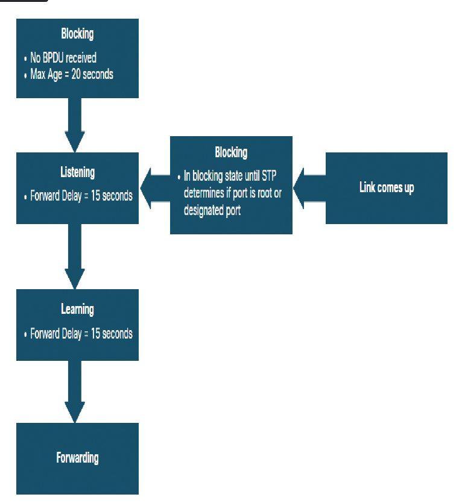

Chapter 5: STP Concepts
Table of Contents
1. STP Concepts
1.1. Introduction
TLDR: STP is done for redundancy (fault tolerance) and preventing Layer 2 loops
1.2. Purpose of STP
1.2.1. Redundancy in Layer 2 Switched Networks
Redundancy is an important part of hierarchical design for eliminating single points of failure and preventing distruption of network services to users. Redundant networks require the addition of physical paths, but logical redundancy must also be part of the design.
Single points of failure
- caused by lack of redundancy in the network
- violates the fault tolerance of a network
Ethernet LANs require a loop-free topology with a single path between any two devices. A loop in an ethernet LAN can cause continued propagation of ethernet frames until a link is disrupted and breaks the loop
1.2.2. Spanning Tree Protocol
Is a loop-prevention network protocol that allows for redundancy while creating a loop-free Layer 2 topology. IEEE 802.1D (the spanning tree protocol) is the original IEEE MAC Bridging standard for STP
STP ensures that there is olny one logical path between all destination on the network by intentionally blocking redundant paths that could cause a loop. After blocking, the physical paths still exist to provide redundancy but these paths are disabled to prevent the loops from occurring
1.2.3. STP Recalculation
The following happens when a link fails
- pc sends broadcast out onto the network
- the broadcase is then forwarded around the network
- a link fails
- some switch unblocks the previously blocked port for a trunk and allows the broadcast traffic to traverse the alternate path around the network, permitting communication to continue. If the link comes back up, STP reconverges, and the port of S2 is again blocked
1.2.4. Issues With Redundanct Switch Links
Although path redundancy eliminates the posibility of a single point of failure, without proper configuration, Layer 2 loops would occur. Thus result in MAC address table instability, link saturation, and high CPU utilization on switches and end devices (network will become unusable).
Layer 2 does not have protocols that have a mechanism to recognize and eliminate endlessly looping frames (unlike in layer 3). In layer 3, a router can use the TTL (Time to Live) in every IPv4 packet and the hop limit field in every IPv6 packet as a mechanism of stopping endless loops.
Note: TTL(IPv4) and Hop Limit(IPv6) are decremented by routers everytime it is passed around, the packet will be dropped once the fields reaches 0.
1.2.5. Layer 2 Loops
Without STP enabled, layer 2 loops can for, causing broadcast, multicast, and unknown unicast frames to loop endlessly. This could bring down a network in a matter of seconds.
1.2.6. Broadcast Storm
Broadcast storm
- ia an abnormally high number of broadcasts overwhelming the network during a specofiv amount of time.
- can be caused by a faulty network interface or a Layer 2 loop in the network
1.2.7. The Spanning Tree Algorithm (STA)
Based on an algorithm invented by Radia Perlman while working for digital equipment corporation, and was published in the 1985 paper "An Algorithm for Distributed Computation of a Spanning Tree in an Extended LAN.
Her STA first selects a root bridge. Then, each switch will determine a single, least cost path from itself to the root bridge.
STP ensures that there is only one logical path between all destinations on the network by intentionally blocking redundant paths that could cause a loop. When a port is blocked, user data is prevented form entering or leaving that port. Blocking the redundant paths is critical to preventing loops on the network.
NOTE: STA and STP refer to switches as bridges. This is because in the early days of Ethernet, switches were referred to as bridges.
1.3. STP Operations2
1.3.1. Steps to a loop free topology
- elect a root bridge
- elect the root ports
- elect designation ports
- elect alternate (blocked) ports
During STA and STP functions, switches use Bridge Protocol Data Units (BPDUs) to share information about themselves and their connections. BPDUs are used to elect the root bridge, root ports, designated ports, and alternate ports. Each BPDU contains a bridge ID (BID) that identidies which switch sent the BPDU. The BID is also involved in making many of the STA decisions, including root bridge and port roles.
- Fields of BID
component Bridge priority extended system id mac address size 4 bits 12 bits 48 bits - Bridge priority
Default value is the decimal value of 32768. The range is 0 to 61440 in increments of 4096. A lower bridge priority is preferable. A bridge priority of 0 takes precedence over all other bridge priorities
- Extended System ID
Is the decimal value added to the bridge priority value in the BID to identify the VLAN for this BPDU. This field allows the later implementations STP, such as Rapid Spanning Tree protocol (RSTP), to have different root bridges for different sets of VLANs. This can allow for redundant, nonforwarding links in an STP topology for one set of VLANs used by different set of VLANs using a different root bridge.
- MAC Address
When two switches are configured with the same priority and have the same extenses system ID, the switch having the MAC address with the lowest value, expressed in hexadecimal, will have the lower BID.
- Bridge priority
- Four-step process of building a loop-free topology
- Elect the Root bridge
STA designates a single switch as a root bridgr and uses it as the reference point for all path calculations. The switches exchange BPDUs to build the loop-free topology beginning with selecting the root bridge.
After the election process that determines the root bridge, BPDU frames will be sent out every two seconds. These frames contain the BUD of sending switch and the BID of the root bridge, known as the Root ID.
The switch with the lowest BID will become the root bridge. At first, all switches declare themselves as the root bridge with their own BID set as the Root ID. Eventually, the switches learn through the exchange of BPDUs which switch had the lowest BID and will agree on one root bridge.
- Imapct of Default BIDs
It is possible for two or more switches to have the same BID (because of the default BID 32768). When this happens, the MAC address becomes the deciding factor as to which switch becomes the root bridge.
NOTE: The priority of switches is 32768 + VLAN ID. Example: 32768 + 1 = 32769
- Determine the Root Path Cost
After the root bridge has been selectyed, the STA starts the process of determining the best paths to the root bridge from all destinations in the broadcast domain. The path information (root path cost) is determined by the sum of all the individual port costs along the path from the switch to the root bridge.
NOTE: The BPDU includes the root path cost. This is the cost of the path from the sending switch to the root bridge.
When a switch receives the BPDU, it adds the ingress port cost of the segment to determine its internal root path cost.
The default port cost are defined by the speed at which the port operates
Link speed STP cose RTSP cost 10 gbps 2 2000 1 gbps 4 20,000 100 mbps 19 200,000 10 mbps 100 2,000,000
- Imapct of Default BIDs
- Elect Root ports
After the STA algorithm is used to select the root port. Every non-root switch will select one root port. The root port is the closest to the root bridge interms of overall cost (best path) to the root bridge. This overall cost is known as the internal root path cost
The internal root path cost is equal to the sum of all the port costs along the path to the root bridge. Paths with the lowest cost become preferred, and all other redundant paths are blocked.
- Elect Designated Ports
The loop prevention part of spanning tree becomes evident during these next two steps. After each switch selects a root port, the switches will then select designated ports.
Every segment bwtween two switches will have one designated port The designated port is a port onthe segment (with two switches) that has the internal root path cost to the root bridge. TLDR: the designated port has the best path to receive traffic leading to the root bridge
What is not a root port or a designated port becomes an alternate or blocked port. The end result is a single path from every switch to the root bridge
NOTE: All switch ports with end devices (hosts) attached are designated ports.
- Elect Alternate (Blocked) Ports
If a port is not a root port or a designated port, then it becomes an alternet (or backup) port. Alternate ports and backup ports are in discarding or blocking state to prevent loops. These ports are in discarding or blocking state to prevent loops to prevent loops.
- Elect a Root Port from Multiple Equal Cost Paths
Root port and designated ports are based on the lowest path cost to the root bridge. In case those are equal, the switch uses the following criteria to determine port roles:
- Lowest sender BID
- Lowest sender port priority
- Lowest sender port ID
- Lowest Sender BID
if equal costs on both paths, then choose the next destination switch that has a lower bridge ID
- Lowest Sender Port Priority
lower port priority will have the root port, other will be set as blocking
- Lowest Sender Port ID
NOTE: The decision is based on the sender's port ID, not the receiver's port ID
The lower port ID in the sender will have the pairing root port
- Elect a Root Port from Multiple Equal Cost Paths
- Elect the Root bridge
1.3.2. STP PORT STATES
BPDU
- sent for the switches to learn
- every two second it is sent (default) [HELLO TIMER yong every two secs]
- Hello timer
- interval between BPDUs.
- default is 2
- too many will flood the network
- can be between 1 and 10 seconds
- Forward Delay Timer
TIme spent in the listening (listening state) and learning (learning state) (can be between 4 and 30 secs)
states time(sec) BPDU MAC address table forwardin data frames blocking 20 receive BPDU frames no update No listening 15 receive and send no update n learning 15 rece send update n forwading yes disable none no update no - Max age timer
the max age is the maximum length of time that a switch waits before to change the STP. The default is 20 secs. (can be between 6 and 40 secs)
NOTE: default times can be changed on the root bridge, which dictated the value of these times for the STP domain
NOTE: STP diameter is the maximum number of switches that data must cross to connect any two switches. Every time it is increased, timers will have to be adjusted

port state description blocking port port is an alternate port and does not participate in frame forwarding recieves BPDU frames to determine the location and root ID of Root bridge with the max age timer (20 secs) if it hasn't received any BPDU from a neighbor switch, it will go into the blocking state listening receives BPDU to determine the path to the root port also transmits its own BPDU frames and informs adjacent switches that the switch port is preparing to participate in the active topology learning a port transitions to learning state after listening receives and processes BPDUs and prepares to participate in frame forwarding it also begins to populate the MAC address table user frames are not forwarded to the destination forwarding in this state, the port is considered part of the active topology forwards user traffic and sends and receives BPDU disabled does not participate in spanning tree and does not forward frames is set when the switch port is administratively disabled #+Operational details of each port state
port state BPDU MAC Address table Forwarding Data Frames blocking receive only no update no listening receive and send no update no learning receive and send updating table no forwarding receive and send updating table yes disable none no update no
1.3.3. Per-VLAN Spanning tree (PVST)
Root bridge for each spanning tree instance. The trees overlap.
1.4. Evolution of STP (spanning tree varieties)
The term STP is misleading. Most professionals generally refer to various implementations of STP such as RSTP(Rapid Spanning Tree Protocoal) and MSTP(Multiple Spanning Tree Protocol). The IEEE standards of spanning tree in context is much more accurate to use.
NOTE: Original STP is standard 802.1D
1.4.1. Varieties of STP
| STP Variety | Description |
|---|---|
| STP | original STP |
| IEEE 802.1D-1998 and earlier | |
| provices a loop-free topology with reundant links | |
| AKA Common Spanning Tree (CST) | |
| assumes one spanning tree instance for the entire network, regardles of number of VLANs | |
| PVST+ | |
| Per-VLAN Spanning Tree | cisco enhancement of STP |
| provices a seperate 802.1D spanning tree instance for each VLAN | |
| supports PortFast, UplinkFast, BackboneFast,BPDU guard, BPDU filter, root guard, and loop guard | |
| 802.1D-2004 | updated vertion of STP, incorporating RSTP |
| RSTP | |
| Rapid Spanning Tree Protocol | 802.1w |
| evolution of STP that provides faster convergence than STP | |
| RapidPVST+ | is a cisco enhancement of RSTP that uses PVST+ and provides a seperate instance of RSTP per VLAN |
| supports PortFast, BPDU, guard, BPDU filter, root guard, and loop guard | |
| MSTP | is an IEEE standard inspired by the earlier Cisco proprietary Multiple instance STP (MISTP) implementation |
| Multiple Spanning Tree Protocol | maps multiple VLANs into the same spanning tree instance |
| MST | |
| Multiple Spanning Tree | is the cisco implementation of MSTP |
| provices up to 16 instances of RSTP and combines many VLANs with the same physical and logical topology into a common RSTP instance | |
| each instance supports PortFast, BPDU guard, BPDU filter, root guard, and loop guard |
Class Notes
- More commonly known as PVST+ in cisco devices (default STP).
- Open standard is RSTP (Rapid Spanning Tree Protocol)
1.4.2. RSTP Concepts
RSTP (IEEE 802.1w) supersedes the original 802.1D while retaining backwards compatibility. Relatively the same when it comes to configuration.
RSTP increaded the speed of the recalculation of the spanning tree whent he Layer 2 network topology changes. It can achieve much faster convergence in a proprly configured network, somtimes in as little as a few hundred milliseconds. If a port is configured to be an alternate port, it can immediately change to a forwarding state without waiting for the network to converge
NOTE: RAPID PVST+ is the cisco implementation of RSTP on a per-VLAN bases. WIth it, an independent instance of RSTP runs for each VLAN.
1.4.3. RSTP Port States and Port Roles
Port roles and states between STP and RSTP are similar
1.4.4. PortFast And BPDU Guard
When a switch port is set to PortFast, that port can transition form blocking to forwarding immediately, bypassing the usual 802.1D STP transition states.
1.4.5. Port fast BPDU
portfast
- implemented on a switch that is connected on a end device
- from disable, punta agad ng forwarding
- optimization lang, di sinasama sa spanning tree yung nasa end-devices
- not applicable sa ibang ports (switch to switch), might lose critical data needed for the spanning tree
1.4.6. BPDU Guard
- security feature of a switch
- when a port is not used, must be set here (for avoiding security bridges)
- when a port in bpdu guard receives a BPDU messages, the port will be
automatically be turned off
1.4.7. Alternatives to STP
- Layer 3!!! (routers)
- Multi System Link Aggregation (MLAG)
- Shortest Path Bridgin
- Transparent Interconnect of Lots of Links (TRILL)
show spanning-tree ## enable rapid pvst enable conf t spanning-tree mode rapid-pvst (apply this to every switch in the tree) spanning-tree portfast spanning-tree vlan 1 root primary (to set the root bridge) int int-id (go to interface config mode) spanning-tree bpduguard enable (to set bpduguard to unused ports)